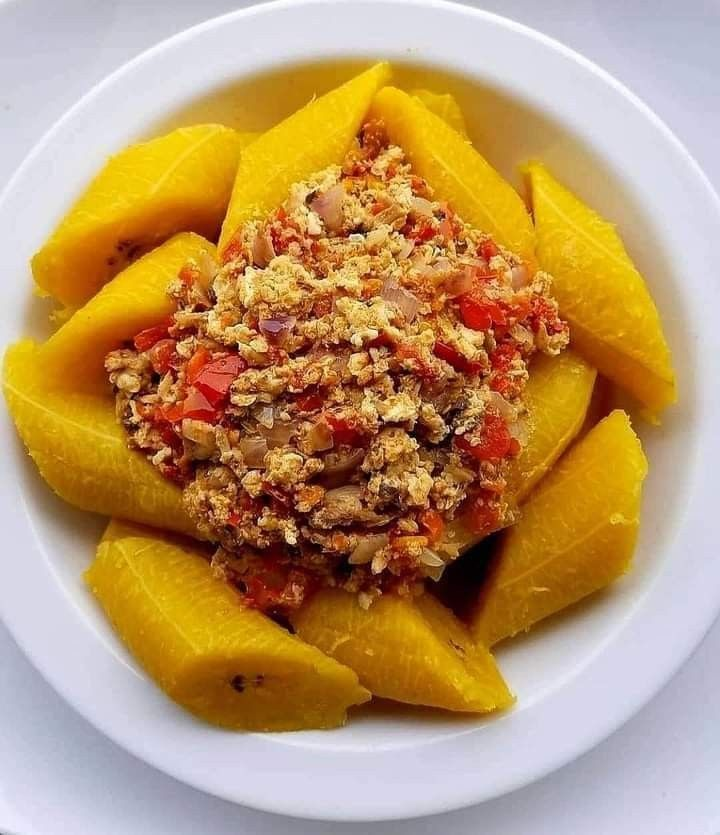

Boiled plantain and Egg Sauce is a simple and delicious Nigerian meal. The yam is boiled until soft and served with freshly prepared egg sauce made with tomatoes, peppers and onions.
It is a tasty and filling meal that can be enjoyed for breakfast, lunch or dinner. The combination of soft yam and rich egg sauce makes it a satisfying choice.
| Specification | Details |
|---|---|
| Main Food | Boiled plantain |
| Sauce | Egg Sauce |
| Ingredients | Egg, Tomato, Pepper and Onion |
| Preparation | Freshly Prepared |
Price: N4,000
Back to Home